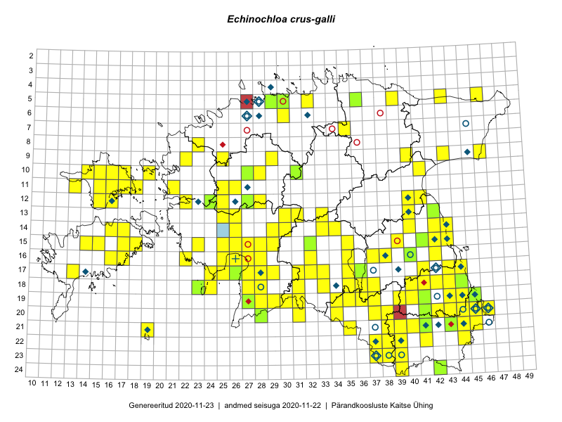

Echinochloa crus-galli
Uuendatud: 2016-12-07
Kaardile koondatud taksonid: Echinochloa crus-galli (L.) P.Beauv.; Echinochloa crus-gallii L.; Echinochloa crusgalli (L.) P.Beauv.

Kaart põhineb 155 kirjel, neist vaatlusi 154 ja eksemplare 1. Taksonit on leitud 84 ruudust.
| Ruut | Vaatleja(d) | Vaatlusaeg | Kirje tüüp | Viide andmebaasikirjele |
|---|---|---|---|---|
| 15-42 | Peedu Saar, Eerik Leibak | 2015-07-30 | punkt | vaata PlutoFis |
| 18-44 | Peedu Saar | 2015-07-04 | ruut/ala | vaata PlutoFis |
| 15-42 | Peedu Saar, Eerik Leibak | 2015-07-30 | ruut/ala | vaata PlutoFis |
| 24-42 | Peedu Saar, Ott Luuk | 2015-08-13 | punkt | vaata PlutoFis |
| 24-42 | Peedu Saar, Ott Luuk | 2015-08-13 | ruut/ala | vaata PlutoFis |
| 12-24 | Tiit Hallikma, Toomas Kukk | 2015-08-24 | ruut/ala | vaata PlutoFis |
| 19-45 | Toomas Kukk, Timo Luhamäe, Kersti Tambets, Sten Mander, Janika Sammasto | 2014-07-29 | ruut/ala | vaata PlutoFis |
| 20-45 | Toomas Kukk, Timo Luhamäe, Kersti Tambets, Sten Mander, Janika Sammasto | 2014-07-30 | ruut/ala | vaata PlutoFis |
| 21-45 | Toomas Kukk, Timo Luhamäe, Kersti Tambets, Sten Mander, Janika Sammasto | 2014-07-30 | ruut/ala | vaata PlutoFis |
| 16-25 | Indrek Tammekänd | 2015-09-18 | punkt | vaata PlutoFis |
| 16-42 | Peedu Saar | 2015-08-21 | ruut/ala | vaata PlutoFis |
| 19-45 | Thea Kull, Meeli Mesipuu | 2015-08-19 | ruut/ala | vaata PlutoFis |
| 12-22 | Ott Luuk, Peedu Saar | 2015-08-24 | ruut/ala | vaata PlutoFis |
| 12-22 | Ott Luuk, Peedu Saar | 2015-08-24 | punkt | vaata PlutoFis |
| 20-37 | Eeva-Maria Jeletsky, Tarmo Niitla | 2015-08-11 | punkt | vaata PlutoFis |
| 20-37 | Eeva-Maria Jeletsky, Tarmo Niitla | 2015-08-11 | ruut/ala | vaata PlutoFis |
| 16-25 | Maret Gerz, Leena Gerz | 2015-08-09 | ruut/ala | vaata PlutoFis |
| 16-25 | Maret Gerz, Leena Gerz | 2015-08-09 | punkt | vaata PlutoFis |
| 15-25 | Maret Gerz, Leena Gerz | 2015-08-08 | ruut/ala | vaata PlutoFis |
| 15-25 | Maret Gerz, Leena Gerz | 2015-08-08 | punkt | vaata PlutoFis |
| 17-24 | Maret Gerz, Leena Gerz | 2015-08-12 | ruut/ala | vaata PlutoFis |
| 13-42 | Meeli Mesipuu, Thea Kull | 2015-08-14 | ruut/ala | vaata PlutoFis |
| 16-16 | Sirje Azarov, Aira Alasi | 2015-07-28 | ruut/ala | vaata PlutoFis |
| 16-16 | Sirje Azarov, Aira Alasi | 2015-07-28 | punkt | vaata PlutoFis |
| 17-36 | Helle Mäemets, Mare Leis | 2015-06-25 | ruut/ala | vaata PlutoFis |
| 19-45 | Meeli Mesipuu, Thea Kull | 2015-08-19 | punkt | vaata PlutoFis |
| 19-45 | Meeli Mesipuu, Thea Kull | 2015-08-19 | punkt | vaata PlutoFis |
| 09-25 | Meelis Muuga, Tõnu Ploompuu | 2015-08-17 | ruut/ala | vaata PlutoFis |
| 09-22 | Tõnu Ploompuu | 2015-07-14 | ruut/ala | vaata PlutoFis |
| 20-41 | Vivika Väli, Ülo Väli | 2015-07-27 | punkt | vaata PlutoFis |
| 19-45 | Toomas Kukk, Tiit Hallikma | 2016-06-17 | ruut/ala | vaata PlutoFis |
| 19-45 | Toomas Kukk, Tiit Hallikma | 2016-06-17 | punkt | vaata PlutoFis |
| 23-38 | Rein Kalamees, Eerik Leibak | 2016-06-16 | punkt | vaata PlutoFis |
| 23-38 | Rein Kalamees, Eerik Leibak | 2016-06-16 | ruut/ala | vaata PlutoFis |
| 19-41 | Vivika Väli, Ülo Väli | 2015-07-15 | ruut/ala | vaata PlutoFis |
| 19-43 | Vivika Väli, Ülo Väli | 2015-08-05 | ruut/ala | vaata PlutoFis |
| 18-44 | Maret Gerz, Liina Oja | 2016-06-17 | ruut/ala | vaata PlutoFis |
| 18-43 | Maret Gerz, Liina Oja | 2016-06-17 | ruut/ala | vaata PlutoFis |
| 20-41 | Vivika Väli, Ülo Väli | 2015-07-27 | ruut/ala | vaata PlutoFis |
| 17-36 | Helle Mäemets | 2015-07-01 | ruut/ala | vaata PlutoFis |
| 14-26 | Liina Oja, Maret Gerz | 2016-07-08 | punkt | vaata PlutoFis |
| 20-28 | Aat Sarv, Eerik Leibak | 2016-07-19 | ruut/ala | vaata PlutoFis |
| 17-32 | Toomas Kukk, Eerik Leibak | 2016-07-20 | ruut/ala | vaata PlutoFis |
| 17-33 | Toomas Kukk, Eerik Leibak | 2016-07-20 | ruut/ala | vaata PlutoFis |
| 17-32 | Toomas Kukk, Eerik Leibak | 2016-07-20 | punkt | vaata PlutoFis |
| 17-33 | Toomas Kukk, Eerik Leibak | 2016-07-20 | punkt | vaata PlutoFis |
| 18-31 | Toomas Kukk, Hannes Pehlak | 2016-07-19 | ruut/ala | vaata PlutoFis |
| 21-43 | Thea Kull, Peedu Saar | 2016-08-05 | ruut/ala | vaata PlutoFis |
| 20-43 | Thea Kull, Peedu Saar | 2016-08-05 | punkt | vaata PlutoFis |
| 10-41 | Ott Luuk, Eerik Leibak | 2016-08-04 | ruut/ala | vaata PlutoFis |
| 17-36 | Rein Kalamees, Kersti Püssa | 2016-07-20 | punkt | vaata PlutoFis |
| 16-38 | Rein Kalamees, Kersti Püssa | 2016-07-19 | punkt | vaata PlutoFis |
| 14-34 | Thea Kull, Tiit Hallikma | 2016-07-22 | ruut/ala | vaata PlutoFis |
| 11-15 | Thea Kull, Peedu Saar | 2016-08-09 | ruut/ala | vaata PlutoFis |
| 11-13 | Thea Kull, Peedu Saar | 2016-08-10 | ruut/ala | vaata PlutoFis |
| 15-17 | Peedu Saar, Toomas Kukk | 2016-08-13 | ruut/ala | vaata PlutoFis |
| 14-26 | Maret Gerz, Liina Oja | 2016-07-08 | ruut/ala | vaata PlutoFis |
| 15-14 | Peedu Saar, Maret Gerz | 2016-08-12 | punkt | vaata PlutoFis |
| 11-16 | Thea Kull, Toomas Kukk | 2016-08-08 | punkt | vaata PlutoFis |
| 10-15 | Sander Laherand, Toomas Kukk, Nele Jõessar | 2016-08-09 | punkt | vaata PlutoFis |
| 15-26 | Maret Gerz, Aat Sarv | 2016-07-04 | punkt | vaata PlutoFis |
| 15-26 | Aat Sarv, Maret Gerz | 2016-07-04 | ruut/ala | vaata PlutoFis |
| 16-38 | Rein Kalamees, Kersti Püssa | 2016-07-19 | ruut/ala | vaata PlutoFis |
| 11-13 | Peedu Saar, Thea Kull | 2016-08-10 | punkt | vaata PlutoFis |
| 11-15 | Peedu Saar, Thea Kull | 2016-08-09 | punkt | vaata PlutoFis |
| 20-43 | Peedu Saar, Thea Kull | 2016-08-05 | ruut/ala | vaata PlutoFis |
| 21-43 | Peedu Saar, Thea Kull | 2016-08-05 | punkt | vaata PlutoFis |
| 15-14 | Maret Gerz, Peedu Saar | 2016-08-12 | ruut/ala | vaata PlutoFis |
| 21-44 | Peedu Saar, Karin Kikas | 2016-08-18 | ruut/ala | vaata PlutoFis |
| 22-44 | Peedu Saar, Karin Kikas | 2016-08-19 | ruut/ala | vaata PlutoFis |
| 19-29 | Timo Luhamäe, Jaak-Albert Metsoja, Lena Neuenkamp | 2016-07-19 | punkt | vaata PlutoFis |
| 21-44 | Karin Kikas, Peedu Saar | 2016-08-18 | punkt | vaata PlutoFis |
| 21-44 | Karin Kikas, Peedu Saar | 2016-08-18 | punkt | vaata PlutoFis |
| 22-44 | Karin Kikas, Peedu Saar | 2016-08-19 | punkt | vaata PlutoFis |
| 22-44 | Karin Kikas, Peedu Saar | 2016-08-19 | punkt | vaata PlutoFis |
| 06-30 | Toomas Kukk, Sander Laherand | 2016-08-30 | ruut/ala | vaata PlutoFis |
| 15-39 | Kaire Lanno, Karin Kaljund | 2016-07-19 | ruut/ala | vaata PlutoFis |
| 15-39 | Kaire Lanno, Karin Kaljund | 2016-07-19 | punkt | vaata PlutoFis |
| 05-32 | Toomas Kukk, Sander Laherand | 2016-08-31 | ruut/ala | vaata PlutoFis |
| 14-17 | Peedu Saar, Ott Luuk | 2016-08-29 | punkt | vaata PlutoFis |
| 15-17 | Toomas Kukk, Peedu Saar | 2016-08-13 | punkt | vaata PlutoFis |
| 11-16 | Toomas Kukk, Thea Kull | 2016-08-08 | ruut/ala | vaata PlutoFis |
| 10-15 | Toomas Kukk, Sander Laherand, Nele Jõessar | 2016-08-09 | ruut/ala | vaata PlutoFis |
| 12-15 | Toomas Kukk, Meeli Mesipuu | 2016-08-10 | ruut/ala | vaata PlutoFis |
| 05-32 | Sander Laherand, Toomas Kukk | 2016-08-31 | punkt | vaata PlutoFis |
| 22-38 | Sander Laherand | 2016-09-06 | punkt | vaata PlutoFis |
| 18-37 | Rein Kalamees, Kersti Püssa | 2016-07-21 | punkt | vaata PlutoFis |
| 16-22 | Timo Luhamäe, Peedu Saar | 2016-07-04 | punkt | vaata PlutoFis |
| 16-28 | Liina Oja, Ott Luuk | 2016-07-20 | punkt | vaata PlutoFis |
| 18-28 | Liina Oja, Toivo Sepp | 2016-07-19 | punkt | vaata PlutoFis |
| 19-30 | Susanna Vain, Ott Luuk, Raivo Kalle | 2016-07-19 | punkt | vaata PlutoFis |
| 13-25 | Indrek Tammekänd | 2016-08-11 | punkt | vaata PlutoFis |
| 19-34 | Sirje Azarov, Peedu Saar | 2016-07-19 | punkt | vaata PlutoFis |
| 21-19 | Meeli Mesipuu, Ott Luuk | 2016-09-10 | ruut/ala | vaata PlutoFis |
| 16-27 | Tiit Hallikma, Tõnu Ploompuu | 2016-06-20 | ruut/ala | vaata PlutoFis |
| 15-27 | Tiit Hallikma, Tõnu Ploompuu | 2016-06-20 | ruut/ala | vaata PlutoFis |
| 06-30 | Sander Laherand, Toomas Kukk | 2016-08-30 | punkt | vaata PlutoFis |
| 14-30 | Hannes Pehlak, Tõnu Ploompuu, Marko Veinbergs | 2016-07-21 | ruut/ala | vaata PlutoFis |
| 18-23 | Peedu Saar, Ott Luuk | 2016-09-21 | punkt | vaata PlutoFis |
| 18-24 | Peedu Saar, Ott Luuk | 2016-09-21 | ruut/ala | vaata PlutoFis |
| 21-35 | Peedu Saar, Ott Luuk | 2016-09-22 | punkt | vaata PlutoFis |
| 21-35 | Peedu Saar, Ott Luuk | 2016-09-22 | punkt | vaata PlutoFis |
| 21-35 | Peedu Saar, Ott Luuk | 2016-09-22 | punkt | vaata PlutoFis |
| 05-43 | Peedu Saar, Toomas Kukk | 2016-09-13 | punkt | vaata PlutoFis |
| 15-15 | Meeli Mesipuu | 2016-09-23 | ruut/ala | vaata PlutoFis |
| 16-16 | Meeli Mesipuu | 2016-09-25 | ruut/ala | vaata PlutoFis |
| 15-27 | Tiit Hallikma, Tõnu Ploompuu | 2016-07-20 | punkt | vaata PlutoFis |
| 17-25 | Tiit Hallikma, Tõnu Ploompuu | 2016-07-06 | ruut/ala | vaata PlutoFis |
| 21-35 | Ott Luuk, Peedu Saar | 2016-09-22 | ruut/ala | vaata PlutoFis |
| 14-16 | Peedu Saar, Ott Luuk | 2016-08-31 | punkt | vaata PlutoFis |
| 17-44 | Peedu Saar | 2016-08-24 | ruut/ala | vaata PlutoFis |
| 17-44 | Peedu Saar | 2016-08-24 | punkt | vaata PlutoFis |
| 18-23 | Ott Luuk, Peedu Saar | 2016-09-21 | ruut/ala | vaata PlutoFis |
| 18-24 | Ott Luuk, Peedu Saar | 2016-09-21 | punkt | vaata PlutoFis |
| 21-19 | Ott Luuk, Meeli Mesipuu | 2016-09-10 | punkt | vaata PlutoFis |
| 21-19 | Ott Luuk, Meeli Mesipuu | 2016-09-10 | punkt | vaata PlutoFis |
| 19-36 | Ott Luuk, Meeli Mesipuu | 2016-09-18 | ruut/ala | vaata PlutoFis |
| 10-19 | Ott Luuk, Meeli Mesipuu | 2016-09-15 | ruut/ala | vaata PlutoFis |
| 14-34 | Tiit Hallikma, Thea Kull | 2016-07-22 | punkt | vaata PlutoFis |
| 05-39 | Tiit Hallikma, Ott Luuk | 2016-07-08 | punkt | vaata PlutoFis |
| 19-31 | Peedu Saar, Ott Luuk | 2016-10-06 | punkt | vaata PlutoFis |
| 18-35 | Peedu Saar, Mari Metsoja | 2016-07-20 | punkt | vaata PlutoFis |
| 18-36 | Peedu Saar, Mari Metsoja | 2016-07-20 | punkt | vaata PlutoFis |
| 19-34 | Peedu Saar, Sirje Azarov | 2016-07-19 | ruut/ala | vaata PlutoFis |
| 19-31 | Ott Luuk, Peedu Saar | 2016-10-06 | ruut/ala | vaata PlutoFis |
| 16-22 | Peedu Saar, Timo Luhamäe, Johannes Kõdar | 2016-07-04 | ruut/ala | vaata PlutoFis |
| 17-25 | Tiit Hallikma, Tõnu Ploompuu | 2016-07-06 | punkt | vaata PlutoFis |
| 14-17 | Ott Luuk, Peedu Saar | 2016-08-29 | ruut/ala | vaata PlutoFis |
| 14-16 | Ott Luuk, Peedu Saar | 2016-08-31 | ruut/ala | vaata PlutoFis |
| 05-39 | Ott Luuk, Tiit Hallikma | 2016-07-28 | ruut/ala | vaata PlutoFis |
| 14-33 | Ott Luuk, Indrek Tammekänd | 2016-07-21 | ruut/ala | vaata PlutoFis |
| 17-28 | Ott Luuk, Liina Oja | 2016-07-20 | punkt | vaata PlutoFis |
| 17-28 | Ott Luuk, Liina Oja | 2016-07-20 | ruut/ala | vaata PlutoFis |
| 16-28 | Ott Luuk, Liina Oja | 2016-07-20 | ruut/ala | vaata PlutoFis |
| 15-15 | Meeli Mesipuu | 2016-09-23 | punkt | vaata PlutoFis |
| 19-30 | Ott Luuk, Raivo Kalle, Susanna Vain | 2016-07-19 | ruut/ala | vaata PlutoFis |
| 20-44 | Meeli Mesipuu | 2016-09-08 | ruut/ala | vaata PlutoFis |
| 20-44 | Meeli Mesipuu | 2016-09-08 | punkt | vaata PlutoFis |
| 20-44 | Meeli Mesipuu | 2016-09-08 | punkt | vaata PlutoFis |
| 10-19 | Meeli Mesipuu, Ott Luuk | 2016-09-15 | punkt | vaata PlutoFis |
| 18-28 | Toivo Sepp, Liina Oja | 2016-07-19 | ruut/ala | vaata PlutoFis |
| 19-28 | Toivo Sepp, Liina Oja | 2016-07-19 | ruut/ala | vaata PlutoFis |
| 20-31 | Meeli Mesipuu, Mari Metsoja | 2016-07-19 | punkt | vaata PlutoFis |
| 17-26 | Meeli Mesipuu, Timo Luhamäe | 2016-07-18 | ruut/ala | vaata PlutoFis |
| 16-32 | Elle Rajandu, Indrek Tammekänd | 2016-07-20 | ruut/ala | vaata PlutoFis |
| 18-43 | Meeli Mesipuu | 2016-09-02 | punkt | vaata PlutoFis |
| 10-41 | Ott Luuk, Eerik Leibak | 2016-08-04 | punkt | vaata PlutoFis |
| 09-43 | Hannes Pehlak, Ott Luuk | 2016-07-29 | ruut/ala | vaata PlutoFis |
| 20-31 | Mari Metsoja, Meeli Mesipuu | 2016-07-19 | ruut/ala | vaata PlutoFis |
| 18-35 | Mari Metsoja, Peedu Saar | 2016-07-20 | ruut/ala | vaata PlutoFis |
| 18-36 | Mari Metsoja, Peedu Saar | 2016-07-20 | ruut/ala | vaata PlutoFis |
| 17-27 | Oliver Parrest, Elle Rajandu | 2016-07-19 | ruut/ala | vaata PlutoFis |
| 20-45 | Meeli Mesipuu | 2016-08-28 | punkt | vaata PlutoFis |
| 18-27 | Oliver Parrest, Elle Rajandu | 2016-07-19 | ruut/ala | vaata PlutoFis |
| 24-42 | Peedu Saar, Ott Luuk | 2015-08-13 | eksemplar | vaata PlutoFis |